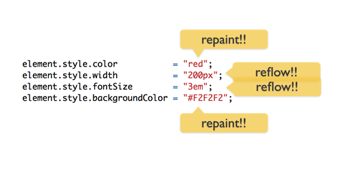
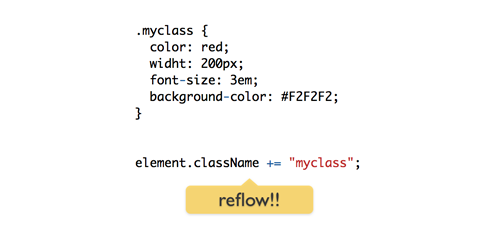

Repaint y reflow
Pues... según opera repaint y reflow están en la lista de sospechosos habituales cuando hablamos de pérdidas de eficiencia de un navegador. Desde mozilla también nos comentan algo a respecto.
Podríamos definir repaint, también conocido como redraw, como lo que pasa cuando cambias una propiedad de un elemento (generalmente de estilo) pero que no produce variaciones en el layout.
Reflow es básicamente lo mismo pero que sí cambia propiedades del layout y obliga a otros elementos a tener que recolocarse.
Los repaints y reflows se pueden producir por muchos motivos, entre otros:
- cambiar el tipo fuente
- añadir/eliminar hojas de estilo
- cambiar el tamaño de la ventana
- calcular offsetWidth / offsetHeight
- redimensionar la ventana
- manipular el DOM
- manipular las clases de un elemento
Desde el punto de vista de nuestro javascript hay ciertas cosas que podemos (tratar de) evitar para que esto no se produzca
- No añadir/eliminar elementos al DOM
- Si no hay más remedio intentar hacerlo en los nodos más profundos del árbol
- Evita las expresiones en la CSS (oe)
- Agrupa los cambios de estilos y siempre que sea posible aplícalos vía css
El ejemplo más claro lo tenemos en el último punto. Al variar los atributos de estilo de un elemento vía javascript, al ir aplicándose de forma secuencial la cosa sería más o menos así:

Una de las posibles soluciones pasa por delegar todos esos cambios de estilo en la CSS y con javascript aplicar la clase al elemento

Para tener más datos sobre estos tipos de pérdidas de eficiencia podríamos usar SpeedTracer, un plugin para Chrome.